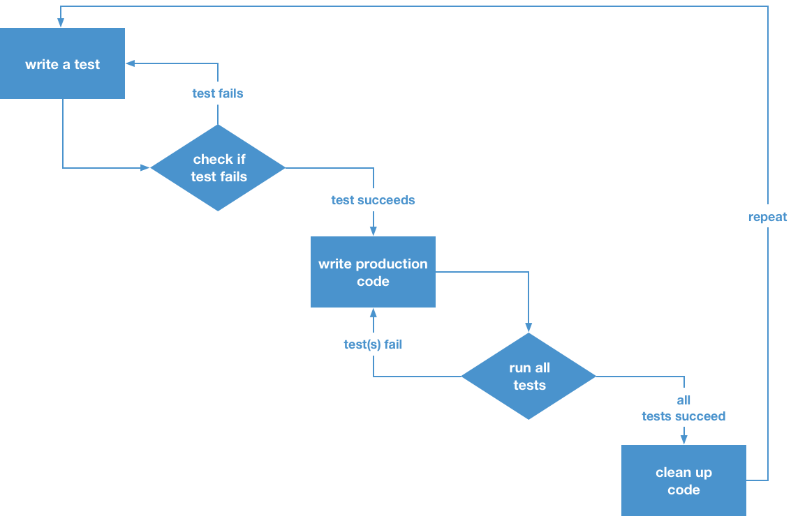
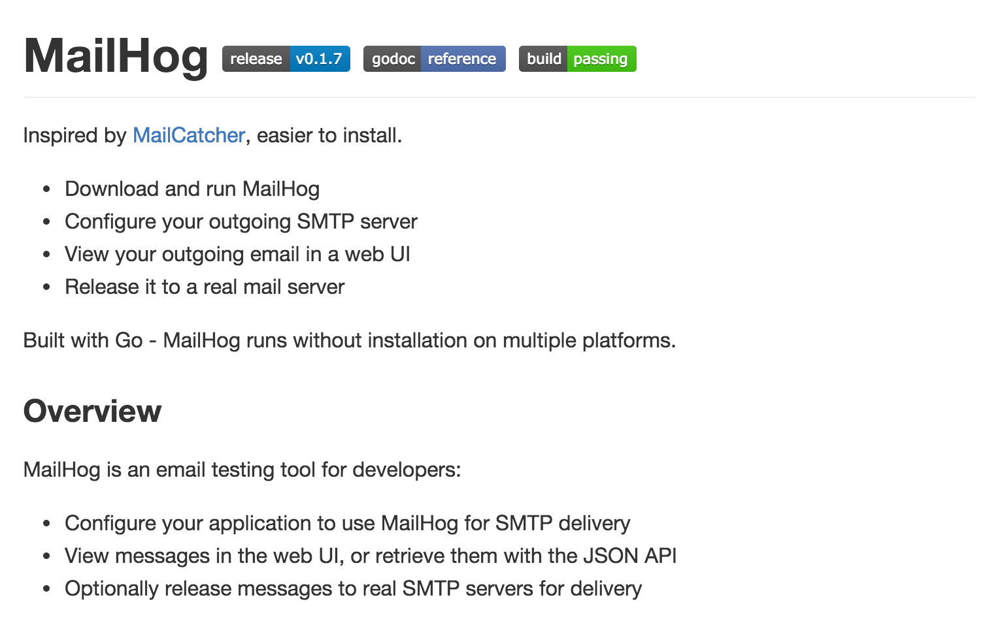

| z, ? | toggle help (this) |
| space, → | next slide |
| shift-space, ← | previous slide |
| b | blank screen |
| d | toggle debug mode |
| ## <ret> | go to slide # |
| c, t | table of contents (vi) |
| f | toggle footer |
| g | toggle follow |
| r | reload slides |
| n | toggle notes |
| p | run preshow |
| P | toggle pause |
| s | choose style |

Feature: Language menu
In order to switch the website language
As a example.com website user
I need to be able to select my language
Scenario: Switching to German
When I follow "Language"
And I follow "Deutsch"
Then I should be on "/de.html"# comments out a lineBackground set the stage for the testFeature starts feature and gives a titleScenario starts scenario and gives descriptionGiven When Then And But
*.feature-fileFeature: keywordScenario:
Tests
└── Behat
└── Features
├── Login.feature
├── Register.feature
└── ResetPassword.feature# Feature example
Feature: Serve coffee
In order to earn money
Customers should be able to
buy coffee at all times
Scenario: Buy last coffee
Given there is 1 coffee left \
in the machine
And I have deposited 1 dollar
When I press the coffee button
Then I should be served a coffeeScenario:
:
# Scenario examples
Scenario: Wilson posts to his own blog
Given I am logged in as Wilson
When I try to post to "Expensive Therapy"
Then I should see "Your article was published."
Scenario: Greg posts to a client's blog
Given I am logged in as Greg
When I try to post to "Expensive Therapy"
Then I should see "Your article was published."Given puts system in a known stateWhen describes key action of a scenarioThen describes expected outcomeAnd and But adds further steps to given, when, thenScenario: Login for secure downloads
Given I am on the login page
And I enter valid credentials
And I press "Login"
When I wait for 2 seconds
And I follow "Secure Downloads"
Then I should see "secret-file.txt"
And I should see "Logout"
But I should not see "Login"Feature: Multiple site support
Background:
Given a global administrator named "Greg"
And a blog named "Greg's anti-tax rants"
And a customer named "Wilson"
And a blog named "Expensive Therapy" \
owned by "Wilson"
Scenario: Wilson posts to his own blog
Given I am logged in as Wilson
When I try to post to "Expensive Therapy"
Then I should see "Article was published."
Scenario: Greg posts to a client's blog
Given I am logged in as Greg
When I try to post to "Expensive Therapy"
Then I should see "Article was published."typo3conf/ext/pt_CUSTOMER_test
├── behat.yaml
├── composer.json
├── Fixtures
├── Tests
│ └── Behat
└── vendor
├── behat
└── punktde
└── ...
└── Behat
└── Context{
"require": {
"behat/behat": "3.0.11",
"behat/mink-extension": "2.0.0",
"behat/mink-selenium2-driver": "*",
}
}behat.yml or config/behat.yml
default:
extensions:
Behat\MinkExtension:
base_url: http://project_url
default_session: selenium2
selenium2:
wd_host: http://localhost:4444/wd/hub
browser: firefoxjava -jar /Applications/selenium-server-standalone-2.45.0.jar
alias startselenium=java -jar /Applications/selenium-server-standalone-2.45.0.jar
# From within the test-extension
# in your TYPO3 project run:
$ bin/behat
Background:
And I am in "desktop" layout$ bin/behat
--- FeatureContext has missing steps. \
Define them with these snippets:
/**
* @Given I am in :arg1 layout
*/
public function iAmInLayout($arg1)
{
throw new PendingException();
}class ResponsiveContext extends RawMinkContext
implements ContextInterface {
/**
* @When I am in :layout layout
*/
public function resizeWindowLayout($layout) {
$settings = $this->settings[$layout];
$this->getSession()->getDriver()
->resizeWindow(
$settings['width'],
$settings['height'],
'current'
);
return TRUE;
}
}default:
contexts:
-
PunktDe\ResponsiveContext# Without scenario outlines
Scenario: Eat 5 out of 12
Given there are 12 cucumbers
When I eat 5 cucumbers
Then I should have 7 cucumbers
Scenario: Eat 5 out of 20
Given there are 20 cucumbers
When I eat 5 cucumbers
Then I should have 15 cucumbers# With scenario outlines
Scenario Outline: Eating
Given there are <start> cucumbers
When I eat <eat> cucumbers
Then I should have <left> cucumbers
Examples:
| start | eat | left |
| 12 | 5 | 7 |
| 20 | 5 | 15 |Given step with tableGiven there are users:
| username | password | email |
| everzet | 123456 | everzet@knplabs.com |
| fabpot | 22@222 | fabpot@symfony.com |$GLOBALS['TYPO3_CONF_VARS']['MAIL'] \
['transport'] \
= 'mbox'
$GLOBALS['TYPO3_CONF_VARS']['MAIL'] \
['transport_mbox_file'] \
= '/var/apache/onebruker/log/mbox.txt' Then I should see :content \
in the email sent to :recipient
When I follow :link \
in the email set to :recipientScenario: Registering a new customer
When I press "Sign Up!"
Then I should see "Thank you for signing up!"
And I should see "You signed up to ..." \
in the email sent to "test@test.com"
When I am on "/"
And I follow "/authentication.html" \
in the email sent to "test@test.com"
Then I should see "Thank you for registering."mailbox.txt is great!
TYPO3_CONTEXT for testingswitch ($applicationContext) {
case 'Testing/Development':
$GLOBALS['TYPO3_CONF_VARS']['DB'] \
['username'] = 'test';
$GLOBALS['TYPO3_CONF_VARS']['DB'] \
['password'] = 'test';
$GLOBALS['TYPO3_CONF_VARS']['DB'] \
['database'] = 'test';
break;
}contexts:
-
DatabaseTestingContext:
featureBasePath:
Tests/Behat/Features
databaseCredentials:
primaryDatabase:
database: test
hostname: localhost
username: test
password: testclass DatabaseTestingContext
implements Context {
/**
* @Given /^dataset :dataset \
* is added to :database$/
*/
public function importDataSetToDatabase \
($dataSetFilePath, $schema) { ... }
/**
* @Given /^the database dump :dump is \
* imported to :database$/
*/
public function importDatabaseDumpToDatabase \
($dumpFilePath, $schema) { ... }
}Background:
Given the database dump "Fixtures/dump.sql" \
is imported to "primaryDatabase"
And dataset "Fixtures/Protocol.yaml" \
is added to "primaryDatabase"PRJ-1234 is your ticket number:
Scenario: See the latest events [PRJ-1234]git commit -m "... PRJ-1234 ..."